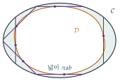

STEP III 2011, 문제 5
계속 읽기 전에 문제를 먼저 읽어 보자. 문제는 STEP Support Programme의 문제 데이터베이스에 있다: step.maths.org/questions/11-s3-q5
도입
아무 타원형(oval) 곡선이나 하나 잡자. 볼록(convex)하기만 하면 어떤 모양이라도 좋다. 길이가 일정한 막대를 두 끝이 모두 곡선 위에 놓이도록 하면서 곡선 안쪽을 따라 한 바퀴 미끄러뜨린다. 막대 위에 점을 하나 찍어 막대를 길이 \(a\)와 \(b\)인 두 부분으로 나눈다. 막대가 한 바퀴 도는 동안 이 점은 더 작은 타원형 곡선을 그린다. 두 곡선 사이에 있는 고리 모양 영역의 넓이는 얼마인가?
놀랍게도 답은 원래 곡선의 모양과 관계없이 \(\pi ab\)이다. 길고 가느다란 타원형이든, 달걀 모양이든, 모서리가 둥근 삼각형이든 고리의 넓이는 언제나 같고, 오직 점이 막대 위 어디에 있는지에만 달려 있다. 이 결과는 1858년 케임브리지 곤빌 앤드 키즈 칼리지(Gonville and Caius College, Cambridge)의 펠로였던 Hamnet Holditch 목사가 발견했으며, 초등 기하학에서 가장 놀라운 정리 가운데 하나이다. 이 문제는 넓이를 구하는 공식 하나만으로 이 정리를 증명한다.
시작하기 전에
가장 간단한 경우에 정리를 확인해 보자. \(\mathcal{C}\)가 반지름이 \(R\)인 원이라면 \(P\)는 어떤 곡선을 그리며, 고리의 넓이는 얼마인가?
대칭성에 의해 \(P\)는 중심이 같고 반지름이 어떤 값 \(r\)인 원을 그린다. 막대 \(AB\)는 \(P\)를 지나는 큰 원의 현(chord)이고, 두 현의 정리(intersecting chords theorem), 곧 “방멱 정리”(power of a point)에 따르면 \(P\)를 지나는 모든 현에 대해 \(PA \times PB = R^2 - r^2\)이다. 따라서 \(ab = R^2 - r^2\)이고, 고리의 넓이는 \(\pi R^2 - \pi r^2 = \pi ab\)이다. 이 정리는 원뿐 아니라 모든 볼록 곡선에 대해 이것이 성립한다고 말한다.
차근차근 풀기
단계 1 좌표로 나타낸 넓이
\(x = r\cos\theta\), \(y = r\sin\theta\)이고 이들이 모두 \(t\)의 함수일 때 \(x\dot y - y\dot x\)를 계산하라. 여기서 점은 \(\frac{\mathrm{d}}{\mathrm{d}t}\)를 나타낸다.
\(\dot x = \dot r\cos\theta - r\sin\theta\,\dot\theta\)이고 \(\dot y = \dot r\sin\theta + r\cos\theta\,\dot\theta\)이다. 그러면 \[x\dot y - y\dot x = r\cos\theta\,(\dot r\sin\theta + r\cos\theta\,\dot\theta) - r\sin\theta\,(\dot r\cos\theta - r\sin\theta\,\dot\theta) = r^2\dot\theta.\] 따라서 \(\frac12\int r^2\,\mathrm{d}\theta = \frac12\int r^2\dot\theta\,\mathrm{d}t = \frac12\int (x\dot y - y\dot x)\,\mathrm{d}t\)이다.■
이 공식에는 극좌표(polar coordinates)가 필요 없고, 매개변수(parameter)의 함수로 나타낸 직교좌표(cartesian coordinates) 위치만 있으면 된다. 점이 \(O\)를 둘러싼 폐곡선(closed curve)을 시계 반대 방향으로 한 바퀴 돌 때, 이 공식은 곡선 내부의 넓이를 준다.
단계 2 막대의 양 끝
막대는 \(A\)에서 \(B\)로 향하는 방향 \((\cos t, \sin t)\)를 가리키고, \(P\)는 \(A\)에서 거리 \(a\), \(B\)에서 거리 \(b\)만큼 떨어져 있다. 따라서 \[A = (x - a\cos t,\; y - a\sin t), \qquad B = (x + b\cos t,\; y + b\sin t).\]
단계 3 \(OA\)가 쓸고 지나가는 넓이
\(A\)에 \((*)\)를 적용하라. \(x_A\dot y_A - y_A\dot x_A\)를 전개하고 \(a\)의 거듭제곱에 따라 항을 정리하라.
\(x_A = x - a\cos t\), \(y_A = y - a\sin t\)이면 \(\dot x_A = \dot x + a\sin t\)이고 \(\dot y_A = \dot y - a\cos t\)이다. 전개하면 \[\begin{aligned} x_A\dot y_A - y_A\dot x_A &= (x - a\cos t)(\dot y - a\cos t) - (y - a\sin t)(\dot x + a\sin t) \\ &= (x\dot y - y\dot x) + a^2(\cos^2 t + \sin^2 t) - a\bigl[(x + \dot y)\cos t + (y - \dot x)\sin t\bigr]. \end{aligned}\] \(0\)부터 \(2\pi\)까지 적분하고 반으로 나누면, 첫째 항은 \([P]\), 둘째 항은 \(\frac12 a^2 \cdot 2\pi = \pi a^2\), 셋째 항은 \(-af\)가 된다. 따라서 \[[A] = [P] + \pi a^2 - af. \qed\]
이제 \([B]\)를 구하라. (힌트: \(A\)의 식에서 \(a\)를 무엇으로 바꾸면 \(B\)가 되는가?)
\(B = (x + b\cos t, y + b\sin t)\)는 \(A\)의 식에서 \(a\)를 \(-b\)로 바꾼 것이다. 따라서 \[[B] = [P] + \pi b^2 + bf.\]
단계 4 \(f\) 소거하기
\(A\)와 \(B\)는 모두 같은 곡선 \(\mathcal{C}\)를 한 바퀴 돈다. 이로부터 \([A]\)와 \([B]\)에 대해 무엇을 알 수 있는가?
\(t\)가 \(0\)부터 \(2\pi\)까지 변할 때 \(A\)와 \(B\)는 각각 \(\mathcal{C}\)를 시계 반대 방향으로 한 바퀴 돌므로 \([A] = [B] = \text{넓이}(\mathcal{C})\)이다. 두 식을 같다고 놓으면 \[\pi a^2 - af = \pi b^2 + bf \quad\Longrightarrow\quad f(a + b) = \pi(a^2 - b^2) \quad\Longrightarrow\quad f = \pi(a - b).\] \(P\)는 \(\mathcal{D}\)를 한 바퀴 돌므로 \([P] = \text{넓이}(\mathcal{D})\)이고, \[\text{넓이}(\mathcal{C}) - \text{넓이}(\mathcal{D}) = [A] - [P] = \pi a^2 - a\pi(a - b) = \pi ab. \qed\] 곡선의 모양에 따라 달라지는 수수께끼 같은 양 \(f\)는 끝내 계산하지 않았다. 소거되었을 뿐이다.
돌아보기
문제에 알맞은 공식. 넓이 공식 \((*)\)에는 매개변수의 함수로 나타낸 좌표만 필요했는데, 막대의 움직임이 바로 그렇게 기술된다.
식은 둘, 미지수는 하나. \(f\)를 계산할 수는 없었지만 \(f\)가 들어 있는 식이 두 개 있었으므로, 연립방정식(simultaneous equations)을 풀 때처럼 \(f\)를 소거했다.
특수한 경우부터 확인하라. 원의 경우가 시작하기 전에 이미 답 \(\pi ab\)를 알려 주었고, 무엇을 목표로 해야 하는지 보여 주었다.
숨은 수학
공식 \((*)\)는 그린 정리(Green’s theorem)의 특수한 경우이다. 그린 정리는 폐곡선을 따라 도는 적분을 그 곡선 내부 영역에서의 적분과 연결한다. 넓이에 관한 형태로 쓰면, 곡선이 둘러싼 넓이는 \(\frac12\oint(x\,\mathrm{d}y - y\,\mathrm{d}x)\)이며, 이 적분은 경계를 따라 한 바퀴 도는 것만으로 계산할 수 있다. 공학자들은 이 사실을 구적기(planimeter)에 활용했다. 구적기는 19세기에 발명된 기계 장치로(그중 가장 성공한 것은 Jakob Amsler가 1854년에 설계한 것이다), 지도나 도면 위 도형의 경계를 바늘로 따라가면 바퀴가 둘러싸인 넓이를 기록한다. 구적기는 토지 면적을 재거나, 지압 선도(indicator diagram)로부터 증기 기관이 한 일을 계산하는 등 여러 용도로 쓰이다가 디지털 방식으로 대체되었다. Holditch의 정리는 이와 밀접한 관련이 있다. 막대는 구적기의 팔과 같다.

숨은 조건
Holditch는 조건에 크게 신경 쓰지 않고 정리를 진술했지만, 이 정리에는 몇 가지 조건이 필요하다. 막대가 두 끝을 곡선 위에 둔 채로 끝까지 한 바퀴 돌 수 있어야 하고, 그려지는 곡선 \(\mathcal{D}\)는 한 번만 그려지는 단순 폐곡선(simple closed curve)이어야 한다. 막대가 \(\mathcal{C}\)의 폭에 비해 너무 길면 \(\mathcal{D}\)가 스스로 교차할 수 있고, 그러면 공식이 주는 “넓이”는 어떤 영역을 두 번 세거나 음의 부호로 센다. 이 문제는 \(\mathcal{D}\)가 \(O\)를 포함하는 볼록 곡선이라고 가정함으로써 이런 어려움을 피한다. 정리가 정확히 언제 성립하는지 밝히는 일은 아름다운 아이디어를 어떻게 엄밀하게 다듬어야 하는지 보여 주는 좋은 예이며, 이는 3장의 주제이기도 하다.
사고 기술
어떤 양이 너무 복잡해서 계산할 수 없다면, 그 양이 들어 있는 서로 다른 두 식을 찾아 그것을 소거하라.
여기서 \(f\)는 곡선의 세세한 모양에 모두 의존했지만, \([A]\)와 \([B]\)의 식에 모두 나타났고, \([A] = [B]\)라는 사실이 그것을 없애 주었다. 답 \(\pi ab\)가 곡선과 무관할 수 있었던 것은 오직 곡선에 의존하는 부분이 상쇄되었기 때문이다.
더 도전하기
타원의 넓이. \(x = p\cos t\), \(y = q\sin t\)로 놓고 \((*)\)를 이용하여 반축의 길이가 \(p\)와 \(q\)인 타원의 넓이가 \(\pi pq\)임을 보여라.
원의 경우. 두 현의 정리를 증명하라. 곧, 원의 두 현이 \(P\)에서 만나면 각 현의 두 선분의 길이의 곱이 서로 같음을 보여라. 이로부터 원에 대한 Holditch의 정리를 이끌어 내라.
중점. \(f = \pi(a - b)\)이므로 \(P\)가 막대의 중점일 때 \(f = 0\)임을 보여라. 이때 고리의 넓이를 막대의 길이 \(L\)로 나타내면 얼마인가?
삼각형. 심화 꼭짓점이 \((0, 0)\), \((x_1, y_1)\), \((x_2, y_2)\)인 삼각형의 경계를 따라 돌면서 \((*)\)를 이용하여 그 넓이를 구하고, 넓이가 \(\frac12|x_1y_2 - x_2y_1|\)임을 보여라. 이것이 임의의 다각형의 넓이를 구하는 “신발끈 공식”(shoelace formula)의 출발점이다.
더 읽을거리
Mark Levi, The Mathematical Mechanic (Princeton University Press). 막대, 바퀴, 용수철을 이용한 물리적 추론으로 수학적 결과를 증명하는 책으로, 이 절과 같은 정신을 담고 있다.
H. M. Schey, Div, Grad, Curl, and All That (Norton). 그린 정리를 포함하여 벡터 미적분학(vector calculus)을 편안하게 소개하는 입문서이다.
Hamnet Holditch, “Geometrical theorem”, Quarterly Journal of Pure and Applied Mathematics 2 (1858). 원래의 짧은 글로, 숨은 조건은 전혀 언급하지 않은 단 한 문단짜리이다.